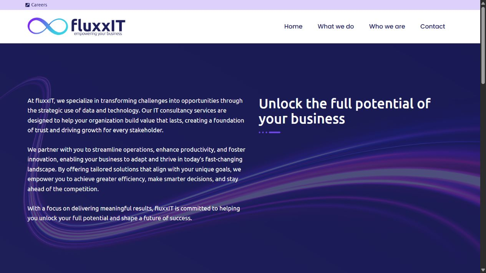
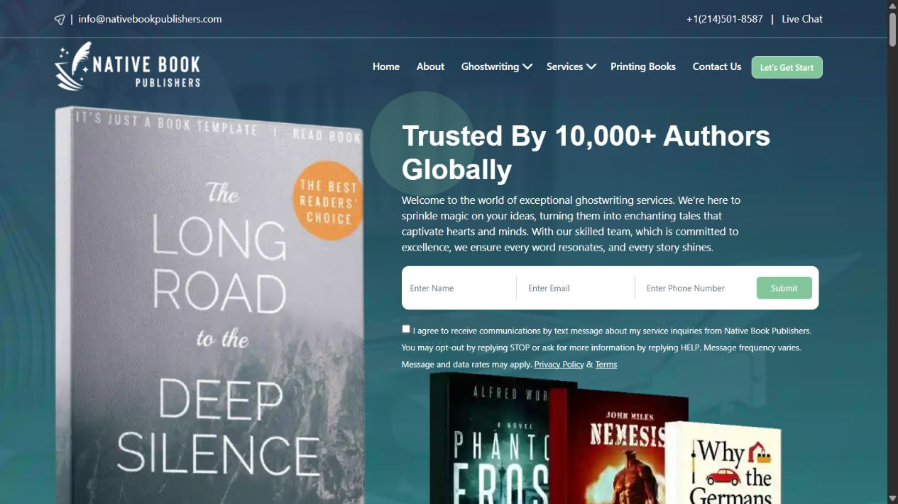
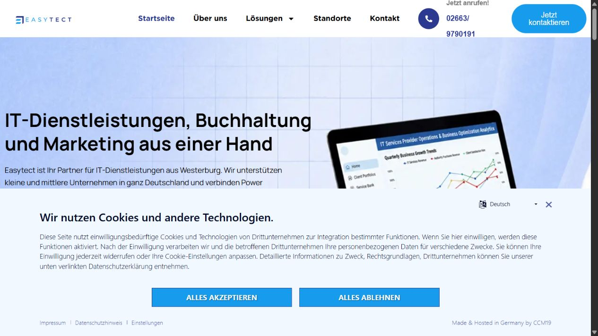
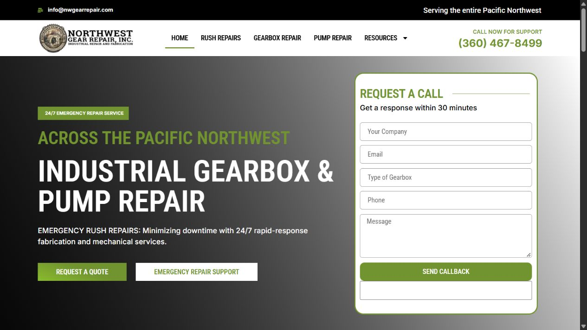
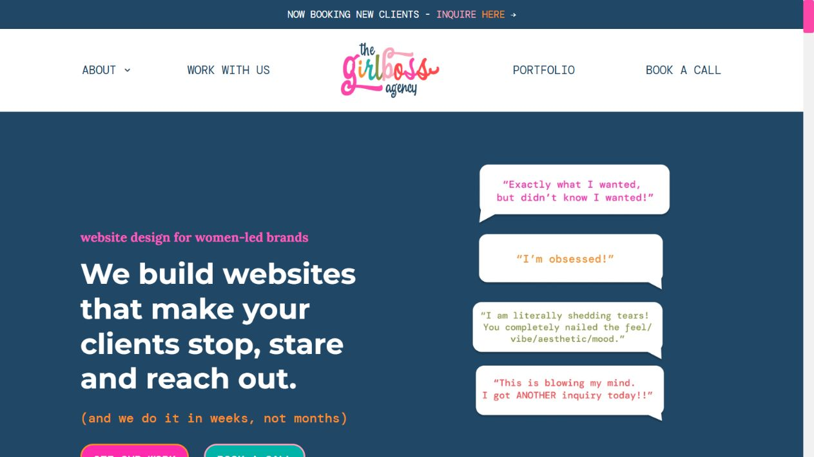
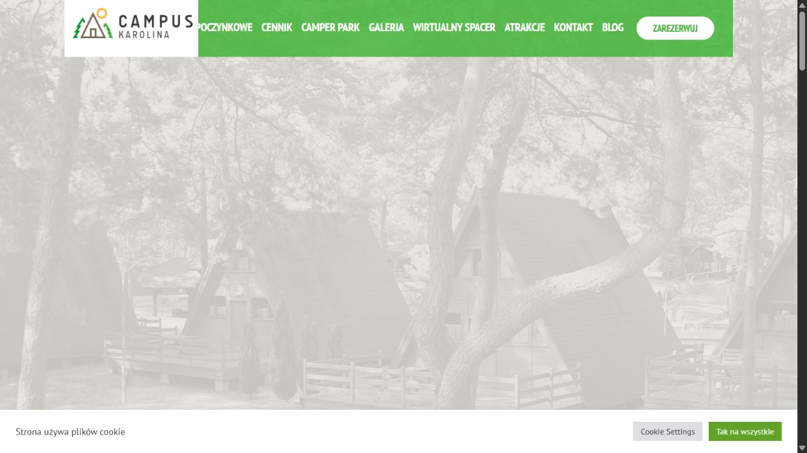
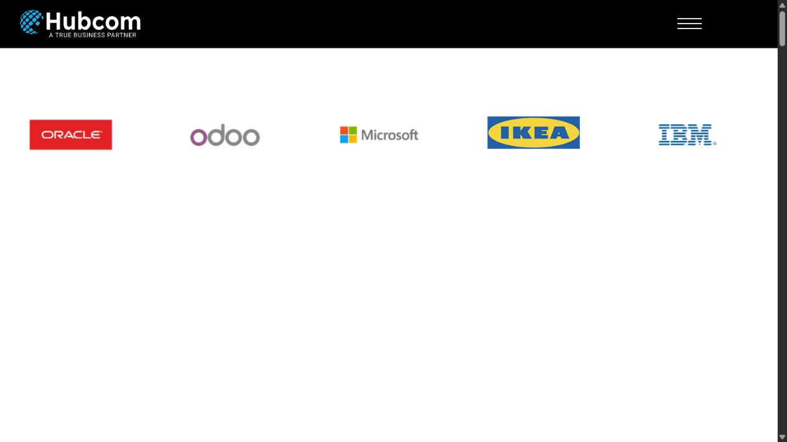

● Available for projects & agency overflow
WordPress that looks sharp and works hard.
I’m Anas Ashfaq, a Pakistan-based WordPress specialist with 4+ years of experience. I build and improve Elementor, WooCommerce and custom websites for direct clients and agency partners worldwide.

Current focusWordPress · WooCommerce · Care plans
Build → improve → support
WORDPRESS✦ELEMENTOR✦WOOCOMMERCE✦SPEED✦MAINTENANCE✦SEO✦REDESIGN✦WORDPRESS✦ELEMENTOR✦WOOCOMMERCE✦SPEED✦MAINTENANCE✦SEO✦REDESIGN✦
What I can own
Practical web support, from first build to long-term care.
Clear scopes, dependable communication and work that fits your existing team or business.
WordPress builds
Responsive business websites, landing pages and custom Elementor builds with an easy-to-manage backend.
- Elementor & theme customization
- Content migration
- Responsive implementation
WooCommerce
Stores that keep product discovery, purchasing and day-to-day management straightforward.
- Store setup & product flows
- Checkout integrations
- Ongoing store support
Redesign & optimization
Focused improvements for dated, slow or difficult websites—without unnecessary rebuilds.
- UX and conversion cleanup
- Performance work
- Technical & on-page SEO
Maintenance & overflow
Reliable delivery for agencies and teams needing white-label or ongoing development capacity.
- Bug fixes & updates
- White-label implementation
- Laravel/MERN when relevant
Scroll the work
Four builds. Four different business journeys.
Selected case studies
Different markets. One standard: clear, useful delivery.
These summaries describe the build focus—not invented performance numbers.
WearInLaw
A fashion ecommerce storefront structured around collection browsing, product discovery and a clear shopping journey across devices.
Visit live website ↗Adventures in Unspoiled Spain
A content-rich travel website that moves visitors from inspiration to tour details and booking-related actions without losing the brand story.
Visit live website ↗USA Industrial Motor Repair
A focused lead-generation website that puts urgent service information, nationwide capability and quote actions in front of industrial buyers.
Visit live website ↗Sullivans Aircon & Refrigeration
A modern service-business presence that gives residential and commercial visitors a direct route to capabilities, project examples and contact.
Visit live website ↗More live work
Technology, publishing, hospitality and professional services.
Each link below was checked before inclusion.

Belgium · Technology
fluxxIT
Business website ↗
USA · Publishing
Native Book Publishers
Service website ↗
Germany · IT services
Easytect
Business website ↗
USA · Industrial services
Northwest Gear Repair
Lead-generation site ↗
USA · Creative agency
The GirlBoss Agency
Agency website ↗
Poland · Hospitality
Campus Karolina
Hospitality site ↗
International · Technology
Hubcom
Corporate website ↗USA · Development
SharkStack
Studio website ↗About
A developer who can plug into the work—not add another layer of management.
I work directly with businesses and behind the scenes with agencies. My strongest lane is WordPress—especially Elementor, WooCommerce, redesigns, maintenance and performance work—with Laravel and MERN support when the brief calls for it.
I care about honest scoping, readable communication and websites that remain practical after launch. I’m based in Pakistan and collaborate remotely with international teams.
Understand
Clarify the goal, current problem and the smallest useful first step.
Build
Work in clear milestones with practical updates and review points.
Refine
Test responsive behaviour, key actions and handover details.
Support
Continue with maintenance and improvements when needed.
Quick answers
What clients and agency partners usually ask.
Clear answers for people—and structured context for search and AI discovery.
What WordPress services does Anas provide?+
WordPress and Elementor development, WooCommerce stores, redesigns, maintenance, bug fixes, speed optimization and technical or on-page SEO support.
Can Anas work as a white-label or overflow developer?+
Yes. I support agencies as a non-competing remote WordPress developer for overflow delivery, subcontract work, maintenance and small paid trial tasks.
Where is Anas based, and can he work internationally?+
I am based in Pakistan and work remotely with international businesses and agencies. Project communication, scope and handover are handled online.
How does a new project start?+
Send your current website, brief or main problem. I will first clarify the desired result and recommend a practical next step before any binding price or deadline is agreed.
Have a project or overflow task?
Start with the real problem. We’ll work out the right next step.
Share your website, brief or current blocker. I can review it and tell you where I can help—without a hard sell.
anasashfaq40@gmail.comPakistan · Available remotely